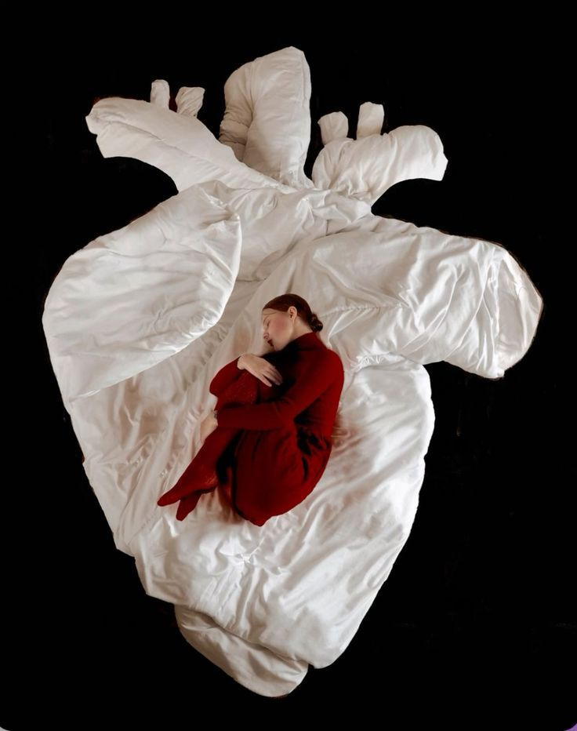
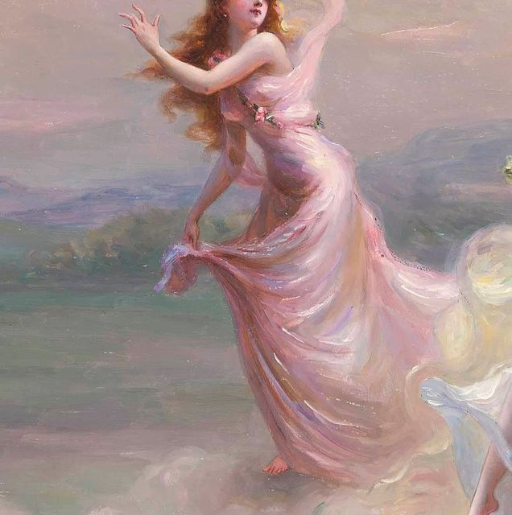
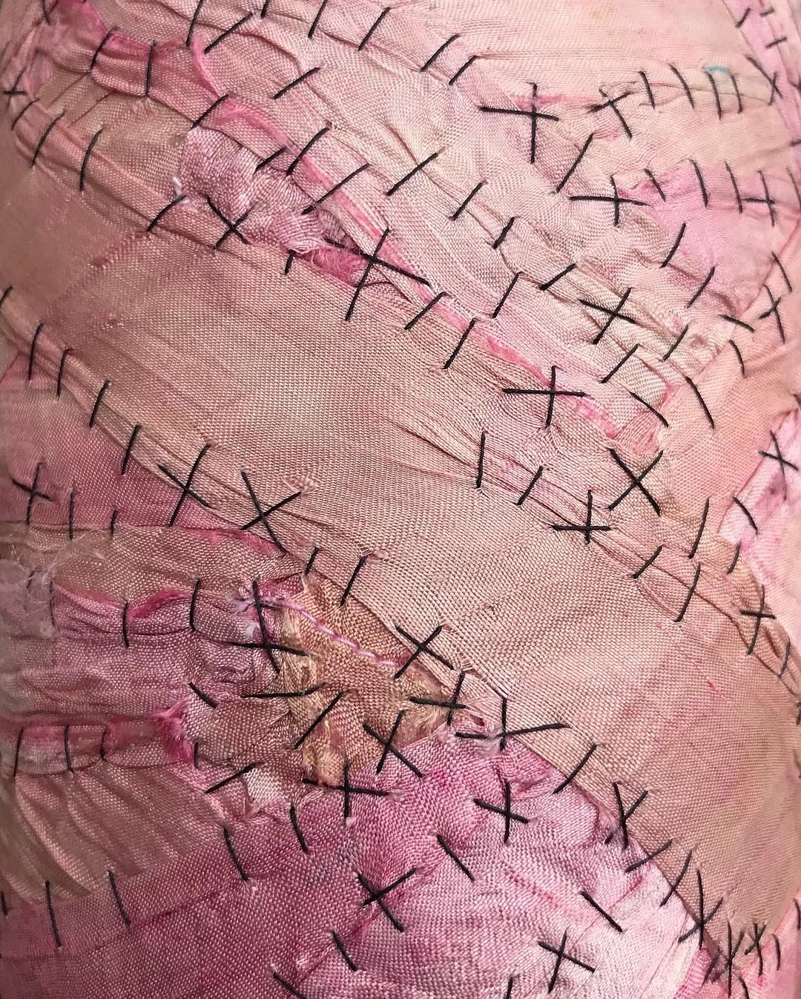

赤い糸
o Akai Ito ou algo assim...




MESSAGES
now
"But my head is full of poison and my heart is full of doubt
I got toxins in my bloodstream, you tried hard to suck 'em out
And it feels like medication and it's good for me, I'm sure
But it don't matter how your love feels anymore
It'll never be the cure"

MESSAGES
now
"Oh, one night I was bored in bed And stalked you on the internet It's feminine intuition 'Cause I always had a vision of us standing like this."